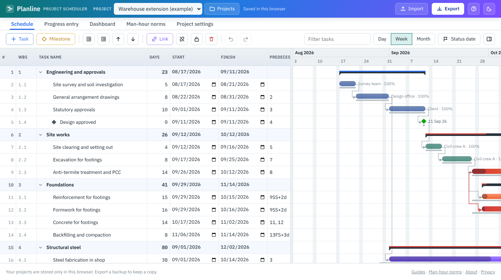

Most EPCM scheduling tools are either expensive licences (Primavera P6, MS Project) or generic task boards that do not understand quantities, man-hours or weighted progress. Planline sits in between. It is a free planning tool built around how project controls teams actually measure EPC work: by quantities installed, man-hours earned and weighted percent complete.

What you can do with it
Build the WBS
Engineering, procurement, construction and commissioning phases with unlimited sub-levels, roll-ups and WBS codes.
Schedule with logic
FS, SS, FF and SF links with lead or lag, working calendars and holidays, critical path and total float.
Estimate man-hours
Quantity × norm × productivity factor, using 397 built-in indicative norms (253 for oil & gas EPCM) or your own.
Measure progress
Record quantities day by day, week by week or month by month. Weightage comes from man-hours, so overall progress is a true weighted figure.
Report
Dashboard with KPI tiles and S-curves, plus a formatted Excel report with Gantt chart, critical path and man-hour histogram.
Import and export
Primavera P6 .xer, MS Project XML, Excel and CSV in; Excel, CSV and MS Project XML out.
A typical EPCM workflow in Planline
- Import or build the schedule. Bring in a P6 .xer, an MS Project XML file or any Excel activity list, or start from the sample EPC project.
- Load quantities. Give each construction activity a unit of measure and scope quantity, such as inch-dia of welding, tonnes of steel or metres of cable.
- Apply norms. Pick a norm from the library (for example field butt welds or cable pulling) and a productivity factor for your site. Man-hours and, if you like, durations follow automatically.
- Baseline and lock. Save a baseline and lock the schedule so the approved plan cannot be changed by accident.
- Record progress. Enter quantities done in the Progress entry sheet. Planline works out earned man-hours, weighted progress and the actual S-curve against plan.
- Report. Export the Excel report for the weekly progress meeting or the monthly client report.
How it compares with Primavera P6 and MS Project
| Planline | Primavera P6 | MS Project | |
|---|---|---|---|
| Cost | Free | Paid licence | Paid licence or subscription |
| Install / account | None, runs in a browser | Install or cloud account | Install or Microsoft 365 |
| Critical path, all link types, lag | Yes | Yes | Yes |
| Quantity-based progress and weightage | Built in | Via steps, resources and UDFs | Manual set-up |
| Man-hour norms library | 397 indicative norms, editable | No | No |
| Resource levelling, multi-user database | No | Yes | Partly |
Planline is not trying to replace P6 on a mega-project with a central database. It is the quick tool for a planner, package engineer or site team who needs a sound schedule and progress measurement today, or wants to look at a P6 file without a licence.
Who uses it
- Planning and project controls engineers on EPC, EPCM and construction projects
- Package and area engineers who need their own look-ahead and progress sheet
- Subcontractors preparing a schedule and man-hour estimate for a bid
- Students learning CPM scheduling and progress measurement
Learn more
- Weighted progress measurement and S-curves for EPC projects
- Man-hour norms for piping, structural, E&I and civil work
- Critical path method explained
- Open a Primavera P6 .xer file without P6
Frequently asked questions
Is Planline really free?
Yes. There is no trial, licence or account. The site may show ads to cover its costs.
Where is my project data stored?
Only in your own browser on your own device. Nothing is uploaded. Export a backup file to keep a copy or move it to another computer.
Can I open Primavera P6 schedules?
Yes. Export an .xer file from P6 and import it. Planline reads the WBS, activities, durations, relationships with lag, actual dates, percent complete and budgeted units.
Does it work for oil and gas projects?
Yes. It was built with oil and gas EPCM in mind, and the norms library has 253 oil and gas items covering piping, welding and NDT, equipment, tanks, E&I, insulation, painting, fireproofing, scaffolding, civil, steel, pipelines and commissioning.
Can several people work on the same schedule?
Not at the same time. Each person works in their own browser. Share a schedule by exporting a backup, Excel or MS Project XML file.
Try it on your own schedule
Planline is free, needs no sign-up and keeps your data in your browser. Start from the sample project or import your own file.